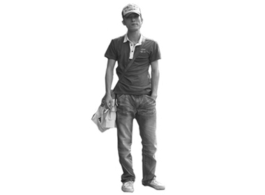
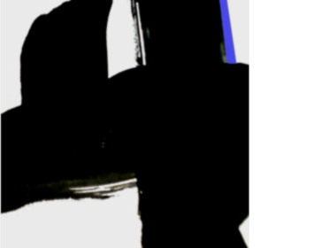
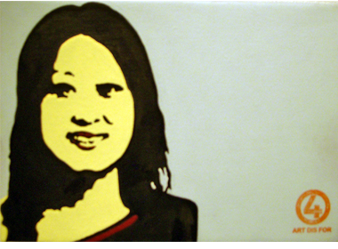
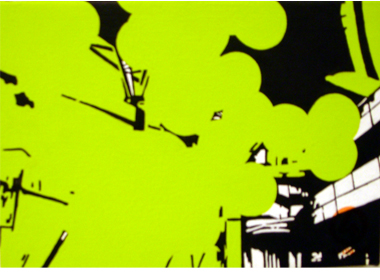
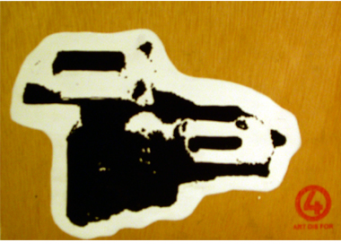
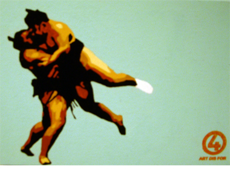
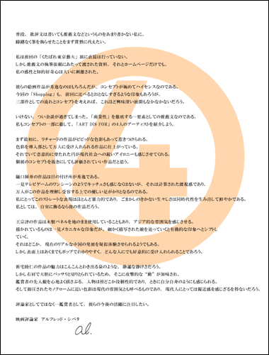
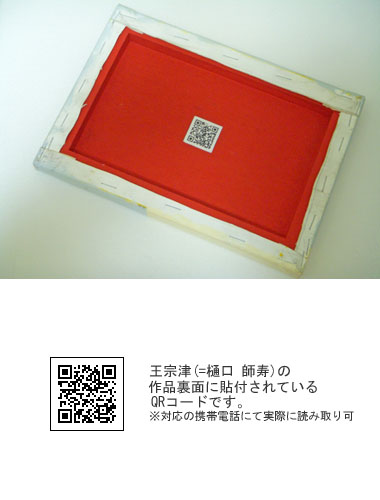

「Shopping」‐真のコンセプト要
| 「Shopping」は単なるグループ展ではなかった
第2回「ART DIS FOR」個展「Shopping」での試みは、イギリスと中国のアーティストを新たに迎え入れたという設定で個展を行うことにあった。つまり 「リチャード・ブランソン」も「王宗津」も実在ではないヴァーチャルだったのである。 その目的は、海外に対する日本人のコンプレックス、ネームバリューに対する脆弱さを逆手に取ることであった。外国人アーティストの存在により付加価値をねつ造し、ARTDISFORにハクをつけ、無名のアート集団の地位を意図的に向上させることだったのである。 それらを行うことにより、一般の鑑賞者はある種の盲目的状態となり、「自分の気に入った絵画」ではなく「イギリス人アーティストが描いた絵画」、「中国人アーティストが描いた絵画」、そして「海外のアーティストと共に活動している“立派な”日本人アーティストの絵画」を買うことになるのである。 以下が「Shopping」においてARTDISFORが企んだ、鑑賞者に“色眼鏡”をかけさせるための、またARTDISFORの地位を操作するための仕掛けの全てである。 |
||
| ●ホームページ上での外国人アーティストの存在および作品の紹介 王 宗津/wan zonjin(＝樋口師寿)という架空の中国人アーティストおよび架空の作品を作成 |
||
|  |  | |
|
王 宗津/wan zonjin 出身地：中国(香港) 生年月日：1977年8月6日 好きなもの：日本のラーメン 嫌いなもの：情熱的な人 ≫art work(右作品掲載ページへ) |
《中庸 #50》 2007年 |
|
リチャード・ブランソン/Richard Branson(＝新宅睦仁)という架空のイギリス人アーティストおよび架空の作品を作成 |
||
 |
||
| リチャード・ブランソン/Richard Branson 出身地：イギリス(ロンドン) 生年月日：1984年12月8日 好きなもの：雨の匂い 嫌いなもの：ナンセンス ≫art work(右作品掲載ページへ) |
《In London》 2006年 |
|
●ヴァーチャルの外国人メンバーを含め4種類の画風を作成 ► 各アーティストの全作品は下の各画像をクリック、またはこちらからご覧ください。 |
||
|  |  | |
| 「新宅 睦仁」の画風 |
「リチャード・ブランソン」(=新宅 睦仁)の画風 |
|
|  |  | |
| 「王 宗津」(=樋口 師寿)の画風 |
「樋口 師寿」の画風 |
|
| ●個展会場での架空の日系人映画評論家による架空の推薦文の掲示 |
||
|  |
左の推薦文全文 普段、批評文は書いても推薦文などというものをあまり書かない私に、躊躇なく筆を執らせたことをまず賞賛に代えたい。 私は前回の「くたばれ東京藝大」展に直接は行っていない。しかし推薦文の執筆依頼にあたって渡された資料、それとホームページだけでも、私の感性と知的好奇心は大いに刺激された。 彼らの絵画作品が秀逸なのはもちろんだが、コンセプトが極めてハイセンスなのである。今回の「Shopping」も、前回に比べるとおとなしすぎるような印象もあろうが、三部 作としての流れとコンセプトを考えれば、これほど興味深い展開もなかなかないだろう。 いけない、つい余談が過ぎてしまった。「商業性」を徹底する一要素としての推薦文なのである。私もコンセプトの一部に徹して、「ART DIS FOR」の４人のアーティストを紹 介しよう。 まず最初に、リチャードの作品がビビッドな色彩もあって惹きつけられる。色彩を導入部として万人に受け入れられる作品に仕上がっている。それでいて恣意的に穿たれた円 が現代社会への鋭いアイロニーも感じさせてくれる。個展のコンセプトを抜きにしても評価されていい作品だと思う。 樋口師寿の作品は目の付け所が秀逸である。一見テレビゲームのワンシーンのようでキッチュさも感じなくはないが、それは計算された既視感であり、万人がこの作品を理解 し受容する上での優しい足がかりとなるのである。私にとってこのストレートな表現はほとんど暴力的であり、ごまかしのきかない生々しさは同時代性を生み出して鮮やかで ある。私としては、自室に飾るなら彼の作品だろう。 王宗津の作品は木製パネルを地のまま使用していることもあり、アジア的な雰囲気を感じさせる。描かれているものは一見メカニカルな印象だが、細かく描写された線を追っていくと有機的な印象へとシフトしていく。それはどこか、現在のリアルな中国の発展を疑似体験させられるようでもある。しかし表面上はあくまでもポップでわかりやすく、どんな人にでも好意的に受け入れられることであろう。 新宅睦仁の作品の魅力はこんこんとわき出る泉のような、静謐な静けさだろう。しかし右肩で大胆にバッサリと切りとられているため、そこに攻撃的な“動”が加味され、鑑賞者の先入観を心地よく揺さぶる。人物は皆どこか没個性的であり、ときに自分自身のようにも感じられる。そして抑圧されたモノクロームに近い色彩は現代の雰囲気とも呼べるものであり、現代人にとっては親近感を感じざるを得ないだろう。 評論家としてではなく一鑑賞者として、彼らの今後の活躍に注目したい。 映画評論家 アルフレッド・シバタ |
|
| ●「Shopping」真のコンセプトの発表方法 |
||
作品裏面に貼付されているQRコード内容の変化 |
||
|  | 作品裏面に貼付されているQRコードを読み込むと以下の内容が表示されます。
例：リチャード・ブランソン このたびは「ART DIS FOR」の絵画作品をお買い上げいただき誠にありがとうございます。 本作品データにつきましては、今回の閲覧とは別に2008年8月28日(木)以降にも再度ご覧いただきますようお願い申し上げます。 名称：絵画(アクリル画) 原材料名：木製パネル、綿布または麻布、アクリル絵具、ジェッソ(下地材および作品裏面カーマイン)、ステープル、紙ラベル、溶剤性ダイインク(スタンプ)、鉛筆、フィキサチーフ 外形寸法：W22.7cm×H15.8cm×D2.0cm(質量/約200g) 鑑賞期限：半永久 展示方法：直射日光、高温多湿を避けて展示・保管して下さい。 また、アクリル作品同士を重ねたり画面に紙やビニールを密着させないで下さい。 制作者：ART DIS FOR/リチャード・ブランソン(Richard Branson) 販売個展：｢Shopping｣ 2008年8月22日(金)～8月28日(木)会期中無 休12時～20時(最終日17時迄)、「ART・IN・GALLERY」〒150-0001 東京都渋谷区神宮前4-25-3 TEL03-3408-8419 お問合せ：Mail HP：http://adf.ifdef.jp Copyright(c) 2007-2008 ART DIS FOR. All Rights Reserved. 以上の内容が表示され、個展終了後に再度読み込むと制作者の項目が書き換えられています。リチャード・ブランソン(Richard Branson)の場合は新宅睦仁(shintaku tomoni)に、王宗津(wan zonjin)の場合は樋口師寿(higuchi shijyu)になっています。 |
|
|
ホームページに掲載されているメンバー画像の変化 |
||
| 個展開催前、開催中に「member」ページに表示されていた画像です。 | 個展終了後、リチャード・ブランソンと王宗津の画像は新宅と樋口の顔でアイコラを施しました。 | |
| 「Shopping」 | |||
| ≫1.概要 | ≫2.真のコンセプト | ≫3.展示風景 | ≫4.絵画作品一覧 |